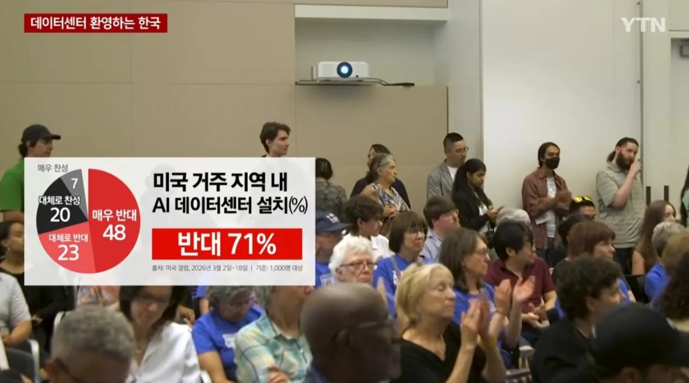
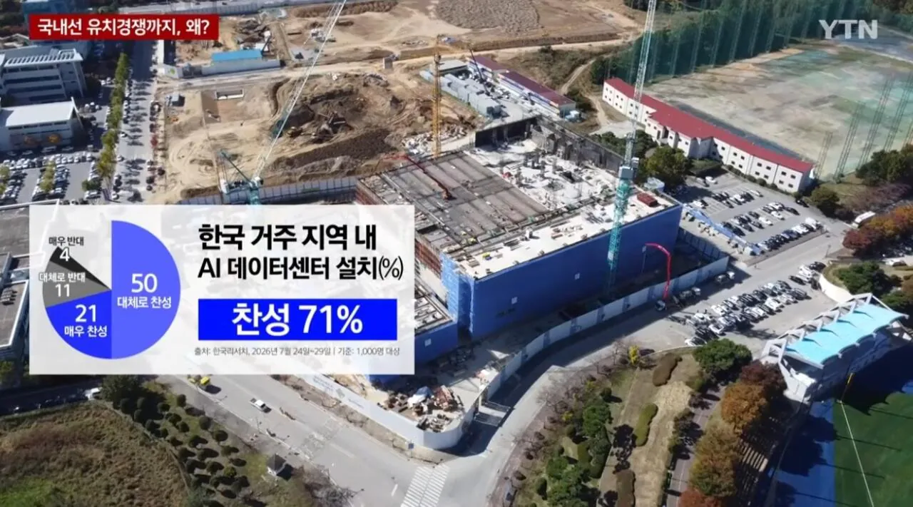

정작 집 옆에 저거 들어서면 장난아닐텐데..


정작 집 옆에 저거 들어서면 장난아닐텐데..
IT인프라 경력 20년 이상에 FE시절에 IDC설계 ISP자료도 들여다 봤는데 어느 지역 IDC가 시끄럽디?
내가 제일 시끄러웠던데는 손바닥만한 사단급 전산실 정전나서 디젤발전기 돌아가던거말고는 겪어보질 못했음.
하다못해 인도 하이데라바드 출장때도 우리나라에서는 보지도 못한 IDC 규모를 봤는데 현지애가 저거 OO은행 전산실이라고 얘기해 주기전까지 IDC인줄도 몰랐는데
한국은 데이터센터들 다 조용함
미국애들이 좆까고 대충 짓는거임
애초에 시끄러웠으면 강남이랑 목동에 idc들 남아나질 못했지 ㅋㅋㅋ
한국 idc들은 다 조용함 외부에 소음 안들림
가끔 냉각탑 수증기 보고 화재신고 넣는 사람들 있어서
수증기 안내문 붙어있는게 다다
내집 옆에 들어올거라는 개념 자체가 없는거임
그냥 들어오면 돈되니까 좋겠지라는 단순한 사고
강남에 지어
강남에 있어
미국은 주민 생활 위한 규제를 싹 무시/우회해서 지은거고, 한국은 그렇게 했다간 좃되는 시스템이라 데센 소음영상같은 일 나기는 어려움.
한국 : 국가 규제
미국 : 지방정부 규제
한국식으로 지으면 문제없는데 미국은 온갖 꼼수를 정치인들이 로비받아 다 허용해줌
한국에서 소음 타령하는 애들 있는데 IDC어딨는지도 모르면서 소음 타령은.. 서울 도심 곳곳에 다 있음. 서버룸만 시끄럽지 내부 사무실도 근무 가능하게 조용함. 외부에선 그냥 일반 냉각탑 돌아가는 소음 정도. 위에 강남 타령하는 애도 있는데 강남에 겁나 많음
미국은 저거 할려면 전기, 물 문제를 지들이 부담하기 싫으니 그냥 동네에 지음. 그걸 동네 사람들과 공동 부담해서 동네 전기, 물 요금이 피크를 침.
심지어 전기 문제 해결 하기 싫으니 발전기 이빠이 돌려서 문제가 생김
지금 당선된 텍사스 주지사가 예전부터 당선되면 데이터 센터 조질거라고 벼르고있었고 결국 당선됨.
이전 직장에서 IDC 3군데에 케이지 10개씩 썼음.
ㄹㅇ
기존 DC는 보통 랙 당 5kw 수준에 아주 높아 봐야 10kw라 같은 건물에 있어도 하중이면 모를까 소음은 별 문제 없긴 하지
요즘 얘기 나오는 미국 DC도 AIDC라며 전력 감당 안 되니까 가스터빈 엔진 돌리고 폐열 배출도 패시브하게 배출 힘들어서 소음이 문제가 된 거니까
아니 다시 보니까 애초에 본문도 AIDC라고 명시 되어 있었네
네이버 데이터센터 지어지기전엔 몰랐는데 지어지고는 거기 주변 주민들 엄청 반대하지않나. 경험해보기전엔 다들 몰라
근데 반대 안할수는 있는데 저걸 찬성할 이유가 있나..? 장점이 조금이라도 있나?
한국은 우리동네 OK 우리집옆 NO임 ㅋㅋㅋㅋㅋ 당장 데이터 센터 짓는다는곳 옆에 가면 현수막 걸로 지랄 나있음 ㅋㅋㅋ
근데 좀만 떨어지면 집값올라간다고 환영함 ㅋㅋㅋ
나 전산실근무 3년이상했었어. 그런데 일반적인 데이타센타가 아니네? 어떻게 짓는가에 따라서 시쓰럽다.